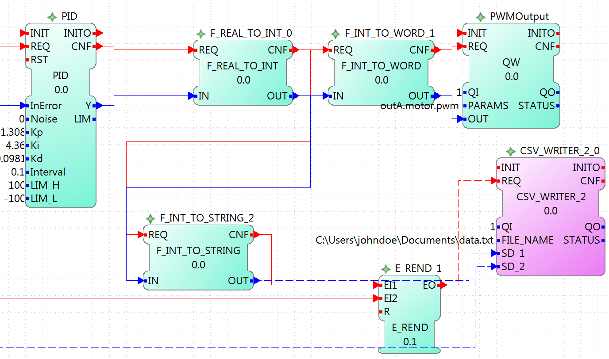
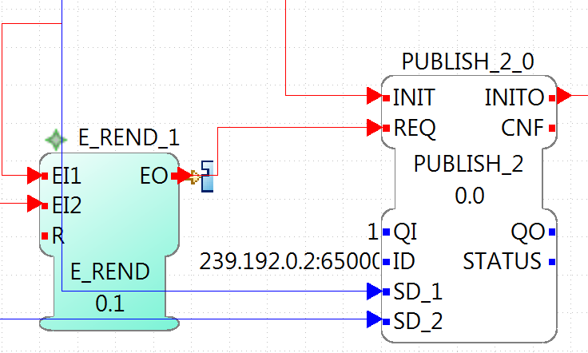
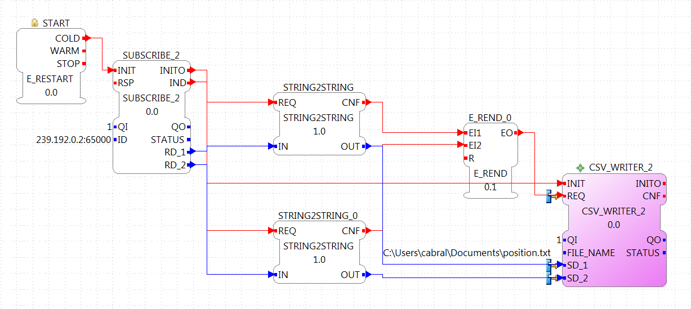

Lego Mindstorm is a series of kits from Lego whose flexibility allows the construction of different system which can be controlled and sensed by the user, using the inputs and outputs. This document focuses on how to implement FORTE in the specific model Lego Mindstorm EV3(LMSEV3). To know more about the LMSEV3 you can visit its Wikipedia page.
The LMSEV3 comes with its own software, but work have been done to implement a Linux distribution that can run on it. The ev3dev is a Debian Linux-based operating system that can run in the LMSEV3. More information about capabilities of ev3dev can be found in its website. The procedure to make ev3dev run in a LMSEV3 is similar to how it's done when running a Linux operating system in a Raspberry Pi. The best and faster way to implement ev3dev in a LMSEV3 is following the instruction on its getting started page. Basically what must be done is to download the ev3dev image and write it on a mini SD card (yes, without an mini SD card you won't be able to run it), insert it in the LMSEV3 and boot it. You'll have to set the network configuration to connect to it.
So, what will you find in this special Linux version for LMSEV3? First, you'll find a menu in the screen of the LMSEV3 that can be accessed using the buttons. And second, you will be able to connect using SSH the same way you would do it on a Raspberry Pi, the BeagleBone Black or other Linux-based operating system and go through the folder system of the ev3dev that is prepared for the LMSEV3. To access all the I/O of the LMSEV3 (including the buttons, led and the screen) there are specific explanations in this ev3dev webpage, but FORTE takes care of accessing them and you as user will only work with normal I/O Function Blocks as IX, QX, IW, QW and so on.
With the LMSEV3 running the ev3dev and accessible through SSH, the next thing to do is to install and run FORTE in it. Similar to other platforms, you have two possibilities. The first one is to transfer the source code to the ev3dev (using WinSCP in Windows or the "scp" command in Linux), installing the compiler and other necessary tools (c++ compiler and CMake, mainly) and compiling it directly in the LMSEV3. The second option is to use a cross-compiler. This means that you will code and compile in your desktop machine, and then send the executable to the LMSEV3 and run on it. The first option is easier to implement but is slower to compile. The second one, is much faster but the setup of the environment in your desktop machine is difficult and takes time. If you are compiling just once or just to try it, use the first option. If you will be compiling several times, you should try the second option. As said, getting your desktop machine to cross-compile for the ev3dev is not easy, but a complete step-by-step guide is presented here.
To install the the necessary tools to compile in the ev3dev run the following commands:
This will install the necessary tools. Then, you just need to go to the FORTE folder you transfered, and execute:
which is going to setup everyting in the bin/posix folder. Next, you should go into the bin/posix folder and simply execute "make" to start the compilation.
Remember, when you create your own FB, you should add these to the FORTE folder, adjust the CMakefiles.txt and compile again. In the example section, it is explained how to do this.
This section is a reference of the parameters that can be used in FORTE to access the I/O of the LMSEV3. Reading this section carefully without using them could be quite boring and even useless, because the details will be forgotten if not used. We recommend to give a quick reading in order to know what can be accessed using FORTE. The next section presents an example of controlling a motor using a PID controller.
The standard access refers to the access through well defined IO blocks, that allow transparency in the access of I/O in different platforms. Each block supports different parameters in the PARAM input, which defines the I/O of the system that will be accessed. The blocks used to control the I/O are named with two capital letters.
The first letter indicates the direction:
The second letter indicates the size of it:
So, for example a boolean input is read using the functional block IX. The output word, for example the PWM value of a motor is controlled with a QW block. Not all sizes are implemented in all platforms.
The parameters for the EV3 were designed for general use, and extension of them is easy to achieve. The format of the parameters follow 2 important rules:
The only capital letters allowed are the A,B,C,D when used to define the output ports of the EV3 (outA, outB, outC, outD).
The parameters are given in three parts separated by points:
port.typeOfIO.specific
port
The first part of the parameter specifies the port of the Input or Output. For the EV3, the possible values are [in1 | in2 | in3 | in4 | outA | outB | outC | outD | emb]. The first eight are directly related to the actual ports of the EV3. The 'emb' port refers to anything that can be managed in the EV3 but not in the I/O ports, until now the leds and buttons, but in the future the screen and speaker would also be reference with the 'emb' port.
typeOfIO
The second part, specifies what is actually connected to the specified port. The possible values are [sensor | sensorw | button | led | motor]. The difference between 'sensor' and 'sensorw' is that 'sensor' is used for boolean sensors, and 'sensorw' for sensors which values are words (16 bits). The 'led' and 'button' are used to control the embedded leds and buttons of the EV3. 'motor' is used for connected motors in any of the outputs.
It must be clear that not all of the types can be used with any port. For example a led is only an output, so if used with a input, for example IX it won't intialize. Also, if used to control as a word QW, it won't initialize either.
specific
As its name says, this third parameter has no general form, and can also be formed of other several parameters separated by points(as in case of the led). Depending of the second parameter, the allowed values for this one are different, and it will be seen in the follow section.
For each possible typeOfIO, the list of possible specific part of the parameters are presented, followed by the limitations and examples.
led (output only):
Each specific is used to control each one of the four leds available. The orange led doesn't exist, but is the sum of red + green, so in order to turn on an orange light of the left for example, both the green and red of the left must be turned on.
Limitation: 'led' must be used with QX and with the 'emb' port.
Example:
emb.led.right.red
button (input only):
Reads the buttons of the EV3.
Limitation: 'button' must be used with IX and with the 'emb' port.
Example:
emb.button.enter
sensorw:
The sensorw is used with sensors that read a word value instead of a boolean and normally are more complex than regular touch sensors (boolean). Each sensor specifies how it retrieves the data, how many values and the format of it. Specifications of the supported sensors by the ev3dev are listed here.
Each one of the sensors' values is stored in a different file in the EV3. The specific [0-N] determines which file it is. For example the GYRO sensor can show the angle and the rotation speed. The values are store in value0 and value1 files, so to access just the rotation speed, the '1' specific must be used. The actual value must be checked in the link above.
The 'mode' specific is used to change the mode of the sensor according to its specification. As an input, mode will retrieve the mode in which the sensor is working, and as output, the mode will be changed. The mode are mirrored using a 0 index according to the specification of the sensor.
Limitation: sensorw cannot be used with boolean blocks (QX or IX). It must be used with an in[1-4] port, but is not restricted to input or output blocks when the specific "mode" is used.
Limitation: the specific [0-N] can be used only as input, and the number shouldn't be greater than the allowed by the sensor in the mode that's working at the moment of initialization.
Examples:
Let's see an example of using the GYRO sensor specified here. The GYRO works in GYRO-ANG by default, showing only one value, then the only possible parameter is:
in1.sensorw.0 (IW)
If a 1 instead of a 0 were used, the initialization would have failed.
If the mode of the sensor wants to be retrieve, the "mode" specific should be used with the input IW.
in1.sensorw.mode (IW)
Because the GYRO sensor by default is in GYRO-ANG and GYRO-ANG is the first of the list according to the link above, the FB will read a 0 (0-index from the list in the link).
If then the sensor's mode is changed using a QW with "mode" specific
in1.sensorw.mode (QW)
and writing a value 3 (0-index mode), the sensor's mode will change to GYRO-G&A wich shows 2 values, angle and rotation speed. After changing the mode, two IW blocks with parameters
will retrieve the both values.
ATTENTION!!! To get the rotation speed, the block with parameter "in1.sensorw.1" must be initialized AFTER the mode has been changed, because before changing the mode, the file for the rotation speed doesn't exist in the system and cannot be read.
sensor (input only):
Used to control touch sensor (binary). sensor' specific is a subset of sensorw' specific. It doesn't allow mode, and even though the value is always stored in '0', the '0' specific must be used for two mainly reasons: 1. To have a standarized way of showing the parameters, and 2. to avoid problems in the future where a new sensor is stored in '1' instead of '0'.
Limitations: 'sensor' must be used with QX and with an in[1-4] port.
Example:
in2.sensor.0
motor
The 'enable' controls the state of the motor accroding to the OUT input of QX. A TRUE value turns ON the motor and a FALSE value turns it OFF. It must be used with QX.
The 'reset' zeroes the position, pwm and speed values, and turn off the motor with a TRUE value in OUT. A FALSE value in OUT has no effect. It must be used with QX
The 'stop' specific must not be confused with stoping the motor, because it specifies the way the motor behaves when PWM is zero according to the value written to OUT. It must be used with QW
The 'pwm' reads the current pwm when using with IW of the motor or writes the desired pwm for the motor when using with QW.
The 'position' reads the current position of the motor. In how many steps a rotation is divided, can be read from using the 'rot' specific. It must be used with ID. The position can be written, wich sets the position to the desired value.
The 'speed' reads the current speed in positions by second. It must be used with IW.
The 'rot' reads the motor specication of how many steps are in one turn of the motor. This can be read from the specifications of the motor normally and it's not necessary to add the block in an application just to read this information. It must be used with IW.
Limitations: Event though each specific has its limitation regarding the type of block to use with, the typeOfIO "motor" must be used with one of the outputs of the EV3 out[A-B]
Examples:
outB.motor.enable (QX)
outB.motor.pwm (QW writes the desired pwm, IW reads the actual pwm)
outB.motor.position (ID)
This section doesn't add any new information, but summarize which parameters and FB should be used with each I/O.
Touch sensor connected to an input port. It must be used with IX
in[X].sensor.[Y]
where X is the number of the input in the EV3 (1-4) and Y is the value number where to read from according to the sensor. Read the specification of the sensor to be sure. Start trying from 0 if no information is available.
One of the 6 buttons of the EV3. It must be used with IX
emb.button.[up | down | left | right | enter | backspace]
Only one of the inputs can be selected for each IX.
Led of the EV3. It must be used with QX.
emb.led.[right | left].[red | green]
The orange led does not exist, but is the sum of green + red.
Motor connected to an output port. The FB to use depends on the parameter of the motor that wants to be handled.
Turn ON/OFF the motor. It must be used with QX.
out[X].motor.enable
Where X is the output capital letter of the EV3 (A-D, in uppercase). A TRUE value in OUT input turns the motor ON, and a FALSE value turns the motor OFF.
Reset the motor variables and stop. It must be used with QX.
out[X].motor.reset
Where X is the output capital letter of the EV3 (A-D, in uppercase). A TRUE value in OUT resets all of the motor parameter attributes to their default values. This will also have the effect of stopping the motor. A FALSE value doesn't have any effect.
Read current duty cycle (pwm) from a motor. It must be used with IW.
out[X].motor.pwm
Where X is the output letter of the EV3 (A-D, in uppercase). The read value is between -100 and 100. It might seem confusing reading an input from an output but even though the signal is from an output, it is an input to the system.
Read the current speed of the motor. It must be used with IW.
out[X].motor.speed
Where X is the output letter of the EV3 (A-D, in uppercase). It reads the velocity in steps per second. How many steps are in one turn of the motor can be read with the parameter "rot" (see next). If a motor has 360 steps in one turn and the speed is 720, then the speed is 2 rotations per second.
Read the number of steps in each turn. It must be used with IW.
out[X].motor.rot
Where X is the output letter of the EV3 (A-D, in uppercase). This value is fixed in the motor and can be found in the specifications of the motor and it normally shouldn't be used in an application.
Read the current position of the motor. It must be used with ID.
out[X].motor.position
Where X is the output letter of the EV3 (A-D, in uppercase). If the motor was in position 0 and the "rot" parameter returns 360, then it makes 3 turns, the position will be 1080.
Write the position of a motor. It must be used with QD.
out[X].motor.position
Where X is the output letter of the EV3 (A-D, in uppercase). Sets the current position to a specific value.
Write a desired duty cycle (pwm) for a motor. It must be used with QW.
out[X].motor.pwm
Where X is the output letter of the EV3 (A-D, in uppercase). The value range should be between -100 and 100.
Specify a desired behaviour when the pwm is set to 0. It must be used with QW.
out[X].motor.stop
Where X is the output letter of the EV3 (A-D, in uppercase). Possible values are 0, 1 and 2:
sensor with values of 16 bits (not touch sensor)
Read a sensor value. It must be used with IW.
in[X].sensorw.[Y]
where X is the number of the input in the EV3 (1-4) and Y is the value number where to read from according to the sensor. Read the specification of the sensor to be sure. Start trying from 0 if no information is available.
Read a sensor's mode. It must be used with IW.
in[X].sensorw.mode
where X is the number of the input in the EV3 (1-4). The read value is an index number according to the list of modes of the sensor.
Write a sensor's mode. It must be used with QW.
in[X].sensorw.mode
where X is the number of the input in the EV3 (1-4). The value to be written should be the index number according to the list of modes of the sensor.
The custom access allows the user to access part of the system that are not implemented in the standard access. Care must be taken, since critical part of the system might be accessed. For each block, the specification of the new inputs and outputs are given.
fileWriter: Block to write to any file in the system. The special inputs are:
FILE_NAME: absolut path of the file.
Example: /sys/class/tacho-motor/motor1/command
S1: String to write to the file
Example: run-direct
fileReader: Block to read from any file in the system. The special inputs and outpus are:
FILE_NAME [input]: absolut path of the file.
Example: /sys/class/tacho-motor/motor1/duty_cycle
S1 [output]: String read from the file
Example: 58
In this tutorial, an implementation of a PID controller for a motor of the EV3 is presented. The position of the motor will be controlled using PWM. The implementation shows all the steps from creating a PID Functional Block in 4DIAC, up to tuning the PID controller and printing the values in a graph.
A basic usage knowledge of 4DIAC is necessary to follow through the steps.
The first thing to do is to create the PID functional block. Go to File->New->New type. In the pop-up menu, choose the parent folder to store the new FB, choose PID as the Type name, and select Basic.fbt as Type. Click Finish, and the view to edit the new FB will open. First, the interface must be configured. Use the image below to complete it

The interfaces uses Kp, Ki and Kd as constants to be tuned instead of the times Ti and Td. This allow easily to zero the integral part. The interval is the time between requests to the FB and is expected to be constant.
With the interface set, the next step is to define the ECC and the algorithm. The ECC graphic is really simple, and it looks like the image below. You may have to create the new algorithms with the names shown before filling the graph.

With the ECC graph ready, it is time to write the code that will rule the behavior of the FB. In the Properties tab below the ECC graph, in one of the sides-tabs called "All InternalVars" add two variables of type REAL, called LAST_ERROR and INTEGRATION_ACCUM. These variables are part of the FB and retain their values between events.
Next, we will edit the algorithms specified in the ECC graph. The simple RESET algorithm just initialize the internal variables. The code for RESET is as following:
LAST_ERROR := 0.0; INTEGRATION_ACCUM := 0.0;
The REQ algorithm is the following, but since is more complex, it will be explained in parts.
VAR
proportionalPart: REAL;
integralPart: REAL;
derivativePart: REAL;
Ydesired: REAL;
errorFiltered: REAL;
END_VAR;
IF ABS(InError) <= Noise THEN
errorFiltered := 0;
ELSE
errorFiltered := InError;
END_IF;
(* calculate proportional part *)
proportionalPart := Kp * errorFiltered;
(* run integrator *)
integralPart := errorFiltered * Interval * Ki + INTEGRATION_ACCUM;
(* run derivative*)
derivativePart := (errorFiltered - LAST_ERROR) * Kd / Interval;
LAST_ERROR := errorFiltered;
(* calculate output Y *)
Ydesired := proportionalPart + integralPart + derivativePart;
(* check output for limits *)
IF Ydesired >= LIM_H THEN
Y := LIM_H;
IF Ki <> 0.0 THEN
IF (errorFiltered < 0 AND Kp > 0) OR (errorFiltered > 0 AND Kp < 0) THEN
INTEGRATION_ACCUM := integralPart;
END_IF;
ELSE
INTEGRATION_ACCUM := 0.0;
END_IF;
LIM := TRUE;
ELSIF Ydesired <= LIM_L THEN
Y := LIM_L;
IF Ki <> 0.0 THEN
IF (errorFiltered > 0 AND Kp > 0) OR (errorFiltered < 0 AND Kp < 0)THEN
INTEGRATION_ACCUM := integralPart;
END_IF;
ELSE
INTEGRATION_ACCUM := 0.0;
END_IF;
LIM := TRUE;
ELSE
Y := Ydesired;
INTEGRATION_ACCUM := integralPart;
LIM := FALSE;
END_IF;
The part between VAR and END_VAR is the declaration of the local variables that will be used inside this algorithm. The values are not retained between events.
The first IF statement
IF ABS(InError) <= Noise THEN
errorFiltered := 0;
ELSE
errorFiltered := InError;
END_IF;is to turn off the PID when the value of the error is below the Noise specified in the input. Only when the error is bigger than the Noise threshold, the computation of the PID will be done.
The next part is the core of the PID computation. All the values are stored in local variables before mirroring then to the actual outputs and internal variables.
(* calculate proportional part *)
proportionalPart := Kp * errorFiltered;
(* run integrator *)
integralPart := errorFiltered * Interval * Ki + INTEGRATION_ACCUM;
(* run derivative*)
derivativePart := (errorFiltered - LAST_ERROR) * Kd / Interval;
LAST_ERROR := errorFiltered;
(* calculate output Y *)
Ydesired := proportionalPart + integralPart + derivativePart;The last part is really important, because it limits the output and eliminates the integral windup. Because the motor PWM can havae values between -100 and 100, if the output is outside this range, the PID should limit this value. More information about integration windup can be found in the internet, but basically, when the error is too big, the integration part doesn't work as ideally suppossed and insert unexpected behavior to the controller.
(* check output for limits *)
IF Ydesired >= LIM_H THEN
Y := LIM_H;
IF Ki <> 0.0 THEN
IF (errorFiltered < 0 AND Kp > 0) OR (errorFiltered > 0 AND Kp < 0) THEN
INTEGRATION_ACCUM := integralPart;
END_IF;
ELSE
INTEGRATION_ACCUM := 0.0;
END_IF;
LIM := TRUE;
ELSIF Ydesired <= LIM_L THEN
Y := LIM_L;
IF Ki <> 0.0 THEN
IF (errorFiltered > 0 AND Kp > 0) OR (errorFiltered < 0 AND Kp < 0)THEN
INTEGRATION_ACCUM := integralPart;
END_IF;
ELSE
INTEGRATION_ACCUM := 0.0;
END_IF;
LIM := TRUE;
ELSE
Y := Ydesired;
INTEGRATION_ACCUM := integralPart;
LIM := FALSE;
END_IF; The IF and ELSEIF are the limits of the value, and in the ELSE is where allowed values are processed. The output limitation is straightforward, but the windup solution can be confusing. What is done is to activate the integration part only when the desired output is inside the limits (in the ELSE), OR when it is outside the limits AND the error is forcing the way back inside the limits. The source of information about this can be found here.
Whit the algorithms done, the FB is ready to be exported and compiled with FORTE.
Once the FB is ready, go to File->Export... and select 4DIAC->4DIAC Type Export. Then explore the folder tree on the left and select the PID FB created on the right. Choose where to export and then click Finish.
To get the source code ready to compile FORTE with the created FB, the generated .cpp and .h files have to be added to the CMAKE configuration. The easiest way to do it is to put both files in the folder src/modules/lms_ev3 and add to the CMakeLists.txt file in that folder, the following line at the end.
The next thing to do is to compile FORTE for the EV3. The easiest way to do it is to copy all the code to the EV3, get the compiling tools inside the EV3 and compile it. The process is really slow compared if it is done in a normal computer, but for one time is much faster than setting all the cross-compiling environment explained here. More details are presented in the section above.
After FORTE with the PID can run in the EV3, is time to create the application that will run on it to contorl the motor's position, and store the values. The application will be shown in parts, for a better understanding.
The first part of the application can be made in different ways, which allows a better control of the tests. In this example, it consists of two push buttons connected to in2 and in4, one for starting the motor and PID and the other one to reset all parameters (which also stops the motor). It has a cycle to read both buttons waiting for a rising trigger on them which sends the event to the enable or reset of the motor.
The initialization of the StartButton FB is done from the COLD START FB when configuring the system.

This part begins with a cycle block that outputs an event every 100ms, that will triger the PID computation. The cycle starts when the motor is enabled, and stops when the motor is reset. This cycle, triggers the reading of the system, in this case the position of the motor. This position is read as WORD (it should be a double, actually, but for now, it can be limited to a WORD) and then is converted to an INT that allows negative values (the WORD_TO_INT block was updated to allow negative values), and then to REAL in order to compute the difference to the set point stablished by the user (INT#1000 in the example). The F_SUB block expect REAL values, and in the input IN1, the set point is given. Take a look that at the output of the WORD_TO_INT block, there is another conversion to a STRING, this conversion is sent to the PC to store the values of the position to plot it. In the last part, it will be shown how is it done.

This part takes the error as the difference of the set point and the position read from the motor, and sends it to the PID controller. The rest of the inputs of it are user defined. The gains (Kp, Ki, and Kd) are tuned according to the method. In this example, the Zeigler-Nichols was used, and it will be seen later. The interval is 0.1 that corresponds to the 100ms of the PID Cycle. The limits corresponds to the limit values of the output, in this case the PWM of the motor.

The last part corresponds to the output of the PID controller and the sending of the information the a log in a PC. The output of the PID is converted to INT and then to WORD to write then the output to the PWM of the motor. Also, the INT value is converted to STRING, similar to the position in the input part, and once both conversions (position and output) are done, they are written to a file using the CSV_WRITER_2 FB from the UTILS module. This FB allows to write 2 values (SD_1 and SD_2) as CSV. The block is in other color, because is in another device, not in the EV3.
Now that the application is done, some other configurations are needed in the system. The first thing is to create both devices and connect them using the Ethernet segment. In the EV3 resource, the first thing to do is to connect the COLD START to the initialization of the StartButton as said before.
The other configuration in the EV3 resource is the publishing of the conversions of the position and output of the PID. Using a PUBLISH_2_0 with both input and the multicast UDP ID (in this case, 239.192.0.2:65000), and the REQ triggerred by the E_REND FB from the application. With this, the EV3 will send the position and output of the PID to the ID address everytime both conversion are done.
The configuration of the resource of the PC where the data will be stored, consists of a SUBSCRIBE_2 FB that will receive the information published by the EV3. The ID is the same as the publisher, and the outputs are converted using the STRING2STRING because the output is an ANY type. When both conversion are done, they are written in the file. Take in account that the CSV_WRITER FB doesn't flush inmediately the output, so the FORTE application must exit to read the information in the file.
NOTE: In windows machines, the used multicast address is not always detected and the packets from the EV3 don't arrive to the FORTE application in the PC. This happens often if the PC is connected to the EV3 through an ad-hoc connection. To overcome this, try adding the address route with gateway to your own machine in the as presented in the Troubleshooting part at the bottom of the BeagleBoneBlack example
With the application ready and working, it is presented now the Ziegler-Nichols method to tune the PID. The basic idea is to turn off the integral and derivative parts, and increase Kp until the output has stable and constant oscillations. The value of Kp that produces this output is called Ku and the oscillation's period at this Ku is called Tu. With these two values, the values of the Kp, Ki, and Kd are chosen according to the table of the link before. Remember that Kd = Kp/Ti and Ki = Kp*Td.
The set point is the position 1000. The first value of Kp is 1 and produces a non oscillating result. With Kp = 2, it takes longer, but still without stable oscillations. With Kp = 3, the results show a stable oscillation. So, the critical Ku value must be between 2 and 3. After a binary search between 2 and 3, it is found that Ku = 2.18 and its graph is shown also below. From the data, it can be seen that the oscillations have a period of 600ms (0.6s).

With the values of Ku and Tu, it is computed the values of Kp, Ki and Kd for the PID controller from the table. The values are Kp = 1.308, Ki = 4.36 and Kd = 0.0981. With this values, the PID controller is again tested and the result is as follow: